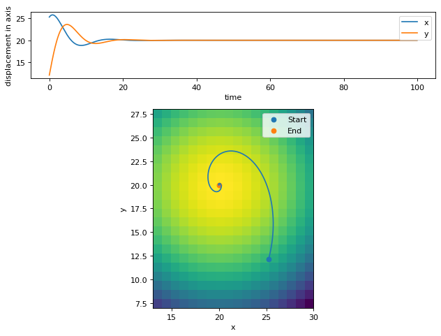

Potential Navigation
An implementation of potential navigation
[1]:
import sys, os
sys.path.insert(0, os.path.join(os.getcwd(), "../src")) # run from within examples folder
[2]:
import numpy as np
import matplotlib.pyplot as plt
from loguru import logger
from typing import List, Tuple
from copy import copy
[3]:
# Install from package at https://github.com/iwishiwasaneagle/jsim/releases/latest
from jsim.Simulation import Simulation
from jsim.Agent import Agent
from jsim.Environment import Environment
from jsim.Meta import Action, State
[4]:
class Force(Action):
def __init__(self, x=0.0, y=0.0) -> None:
super().__init__()
self.x = x
self.y = y
class XYState(State):
def __init__(self, x=0, y=0) -> None:
super().__init__()
self.x = x
self.y = y
class Position(XYState):
pass
class Velocity(XYState):
pass
class Acceleration(XYState):
pass
class PhysicalState(State):
def __init__(self, position=None, velocity=None, acceleration=None) -> None:
super().__init__()
if position is None:
position = Position()
if velocity is None:
velocity = Velocity()
if acceleration is None:
acceleration = Acceleration()
self.pos = position
self.vel = velocity
self.acc = acceleration
[5]:
class PotentialAgent(Agent):
def __init__(self, *args) -> None:
super().__init__(*args)
self.reset(PhysicalState())
def reset(self, ps: PhysicalState) -> Force:
super().reset(ps)
return self.policy(ps)
def step(
self, ps: PhysicalState, pa: Force, pnext_s: PhysicalState, reward: float
) -> Force:
return self.policy(self.state)
def update(self, pa: Force) -> PhysicalState:
fx, fy = pa.x, pa.y
self.state.acc.x = fx * 0.1 - 0.4 * self.state.vel.x
self.state.acc.y = fy * 0.1 - 0.4 * self.state.vel.y
self.state.vel.x += self.state.acc.x * self.psim.dt
self.state.vel.y += self.state.acc.y * self.psim.dt
self.state.pos.x += self.state.vel.x * self.psim.dt
self.state.pos.y += self.state.vel.y * self.psim.dt
return self.state
def policy(self, pnext_s: PhysicalState) -> Force:
"""
The agent wants to get to (20,20).
Simple potential function following to the minima.
.. math::
f_x = \\frac{d}{dx} [ (x-20)^2 + (y-20)^2 ] = 2(x-20)
f_y = \\frac{d}{dy} [ (x-20)^2 + (y-20)^2 ] = 2(y-20)
"""
fx = -2 * (pnext_s.pos.x - 20) # minus to make it go towards the centre
fy = -2 * (pnext_s.pos.y - 20)
return Force(fx, fy)
[6]:
class PotentialEnv(Environment):
def __init__(self, *args, **kwargs) -> None:
super().__init__(*args, **kwargs)
def reset(self) -> None:
"""
This env has no memory or physicalness to it.
"""
pass
def step(self) -> Tuple[None, float]:
"""
This env has no memory or physicalness to it.
"""
return None, 0
[7]:
class PotentialSim(Simulation):
env: PotentialEnv
agent: PotentialAgent
def __init__(self, dt=0.1) -> None:
self.pos_arr = []
self.env = PotentialEnv(self)
self.agent = PotentialAgent(self,self.env)
self.dt = dt
super().__init__()
def reset(self) -> None:
self.env_s = self.env.reset()
self.agent_s = PhysicalState(
position=Position(*(20 + 5 * np.random.normal(0, (2, 1)))),
velocity=Velocity(*np.random.rand(2) * 5),
)
self.agent_a = self.agent.reset(self.agent_s)
def collect_data(self, ps: PhysicalState) -> None:
self.pos_arr.append((ps.pos.x, ps.pos.y))
def steps(self, num_steps: int) -> None:
for i in range(num_steps):
agent_a = self.agent.step(self.agent_s, self.agent_a, None, 0)
agent_s = self.agent.update(agent_a)
self.collect_data(agent_s)
if agent_s != 0:
self.agent_a = agent_a
self.agent_s = agent_s
else:
self.reset()
logger.info(f"Trial completed after {i}/{num_steps} steps")
return
[8]:
mysim = PotentialSim()
mysim.steps(1000)
pos_x = [p[0] for p in mysim.pos_arr]
pos_y = [p[1] for p in mysim.pos_arr]
t = [mysim.dt * i for i in range(len(pos_x))]
fig, (ax1,ax2) = plt.subplots(2,1,gridspec_kw={'height_ratios': [1, 3]},figsize=(8, 6), dpi=80)
ax1.plot(t, pos_x,label='x')
ax1.plot(t, pos_y,label='y')
ax1.set_ylabel('displacement in axis')
ax1.set_xlabel('time')
ax1.legend()
x,y = np.meshgrid(
np.arange(
np.floor(min(pos_x))-5,
np.ceil(max(pos_x))+5
),
np.arange(
np.floor(min(pos_y))-5,
np.ceil(max(pos_y))+5
)
)
z = (x-20)**2 + (y-20)**2
ax2.imshow(-z, origin='lower', extent=[np.min(x), np.max(x), np.min(y), np.max(y)])
ax2.plot(pos_x, pos_y)
ax2.scatter(pos_x[0], pos_y[0], label="Start")
ax2.scatter(pos_x[-1], pos_y[-1], label="End")
ax2.set_xlabel('x')
ax2.set_ylabel('y')
ax2.legend()
fig.tight_layout()
